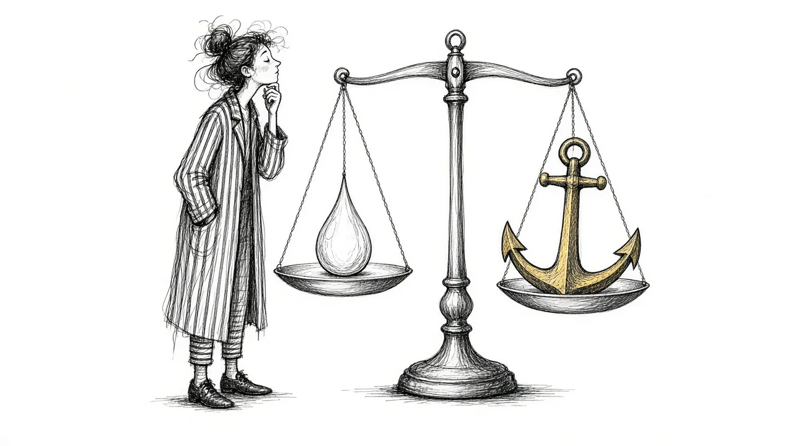

Grief vs. Sadness: When Grief Is More Than a Bad Week

Everyone feels sad sometimes. A bad week at work, a disappointing phone call, a rainy Sunday. Sadness comes and goes, and most of us know how to ride it out. Grief can feel similar at first, but it is something different, and treating grief like ordinary sadness can leave you confused about why it does not lift the way you expected.
This guide explores how grief and sadness overlap, where they differ, and why the difference matters for how you care for yourself.
What sadness is
Sadness is a natural emotion. It usually shows up in response to a disappointment, a setback, or a loss of something we hoped for. It can be mild or intense, but it tends to be tied to a specific situation, and it often passes as the situation changes or as we get some comfort.
Sadness is one feeling. It might come with tears, low energy, or a wish to be alone, but it is usually recognizable and fairly contained.
What grief is
Grief is the response to losing someone or something deeply important. Sadness is often part of it, but grief is much broader. It can include longing, anger, guilt, fear, numbness, relief, and love, sometimes all on the same day.
Grief also reaches into the body, the mind, daily routines, relationships, and sense of identity. It is not a single feeling but a whole process of adjusting to a world that has changed. Our guide What Is Grief? explains this in more depth.
Sadness is a feeling. Grief is a whole season of life.
Key differences between grief and sadness
1. Depth and reach
Sadness tends to stay in one area of life. Grief touches everything: sleep, appetite, work, relationships, faith, and sense of self.
2. Duration
Sadness often eases within hours or days. Grief can last for months or years, and many people carry some form of it for life. It usually softens and changes shape rather than ending.
3. Pattern
Sadness tends to fade fairly steadily. Grief often comes in waves, easing and then returning, sometimes triggered by reminders and sometimes by nothing at all. See Grief Waves.
4. Mix of emotions
Sadness is mostly sadness. Grief often brings a tangle of emotions that can seem contradictory, like laughing at a memory and then sobbing a moment later.
5. Connection to identity
Sadness rarely changes who you are. Grief often does. Losing a partner, parent, or child can shift your roles, routines, and sense of the future.
6. Longing
Grief usually includes a strong yearning for the person who died. Sadness about a missed opportunity does not usually carry that same pull.
Why the difference matters
If you treat grief like ordinary sadness, you might expect it to pass in a week or two. When it does not, you may worry that something is wrong with you. You might also try the strategies that work for sadness, like distraction or a good night's sleep, and feel frustrated when they do not make a lasting difference.
Recognizing grief as grief can bring relief. It allows you to expect a longer, uneven process and to give yourself more patience and care.
When grief feels like a bad week
Sometimes grief does feel like a bad week. You are tired, irritable, low, and you cannot quite put your finger on why. Then you realize it is the week of their birthday, or you heard a song they loved, or the season changed and you remembered the last time you saw them.
Grief often hides inside ordinary low moods. If you notice a stretch of sadness that seems out of proportion to what is happening, it may be worth asking yourself whether grief is part of it.
What helps with grief that sadness strategies miss
Some of the things that help with sadness can help with grief too: rest, comfort, time with friends. But grief often needs a few more things.
Space to grieve
Grief tends to need some deliberate attention. That might mean setting aside time to look at photos, visiting a meaningful place, or writing about the person.
Connection to the person
Unlike sadness, grief is tied to a relationship. Staying connected, through memories, rituals, or conversation, can bring comfort. See Continuing Bonds.
Patience over time
Grief does not usually respond to quick fixes. It changes slowly, and setbacks are normal.
Support from people who understand
Friends who have also grieved, support groups, or counselors can offer understanding that general cheering up cannot.
A simple way to check in
If you are not sure whether you are sad or grieving, a few questions can help:
- Is this feeling connected to someone or something I lost?
- Does it come in waves rather than fading steadily?
- Is it affecting my sleep, appetite, focus, or sense of who I am?
- Do I feel a longing for someone who is gone?
- Has it lasted longer than ordinary sadness usually does for me?
If you answer yes to several of these, it may be grief. That is not a diagnosis. It is a way of being kinder to yourself about what you are carrying.
Grief, sadness, and depression
Grief and sadness are both natural. Depression is different. It is a mental health condition that can sometimes sit alongside grief or develop after a loss.
Some signs that you may be dealing with depression rather than, or alongside, grief:
- A persistent low mood that does not lift even with good memories or support
- Feeling worthless or deeply guilty about things unrelated to the loss
- Losing interest in almost everything, most of the time
- Hopelessness about the future in general, not just about life without the person
If this sounds familiar, our guide to Grief vs. Depression explains more, and it may help to talk with a doctor or counselor.
When to reach out
Whether you are dealing with sadness, grief, or both, please seek help if you feel unable to cope, if daily life has become very hard for a long stretch, or if you are having thoughts of ending your life.
If you are thinking about suicide, call or text 988 to reach the Suicide and Crisis Lifeline at any time.
Small sadnesses inside grief
Grief also contains many smaller sadnesses that can catch you off guard: finding their handwriting on a grocery list, seeing a product they always bought, hearing someone with a similar laugh. These moments can feel like ordinary sadness, quick and sharp, but they are threads of the larger grief. Noticing them for what they are can help you respond gently instead of wondering why such a small thing hurt so much.
Giving grief its name
There is something powerful about calling grief what it is. It tells you that what you are feeling is not just a bad week or a low mood. It is the natural response to a loss that mattered. That recognition can make room for patience, for support, and for the slow work of carrying the person you love into the rest of your life.
This article is for general information and support. It is not medical or mental health advice. If grief has become unbearable or you are thinking about harming yourself, call or text 988 right now.
Related reading

Grief Alongside Depression and Anxiety
Grief often arrives alongside other mental health challenges. How to recognize overlap and get support for all of it.

Why Your Brain Keeps Replaying Their Last Days
Memories of the final days or moments can loop relentlessly. Here is why that happens and how to let the rest of their life back in.

Rumination in Grief: Getting Off the "What If" Wheel
Endless what-ifs and if-onlys can trap grieving people. Learn why rumination happens and gentle ways to step off the wheel.